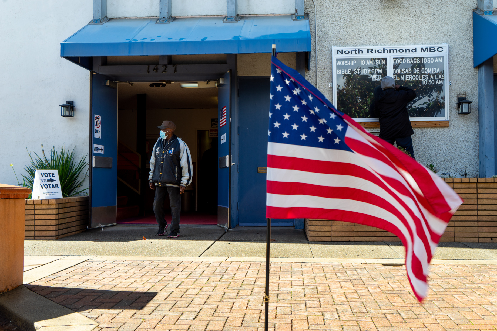
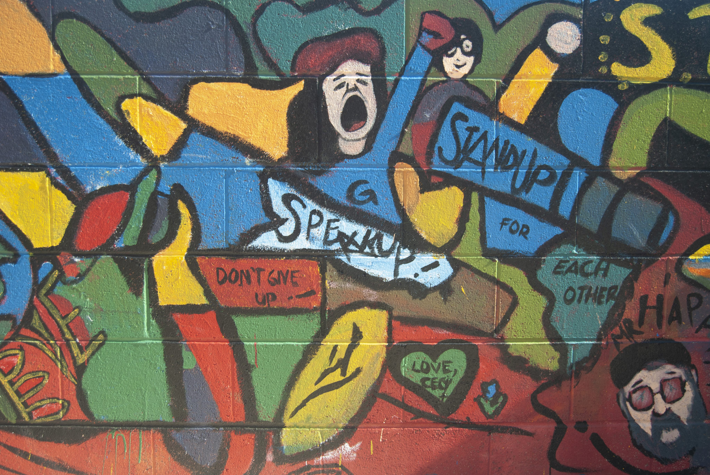
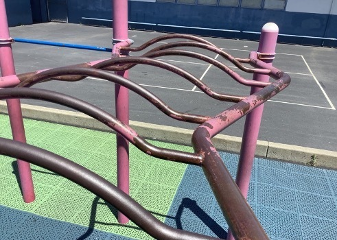

Hi there! I'm Cara Nixon, a journalist with over four years of experience. I'm currently attending UC Berkeley's Graduate School of Journalism and focusing on narrative writing and multimedia. Besides pursuing my master's, I'm also interning for the Investigative Reporting Program's Aging in America project and covering education for Richmond Confidential. I've had bylines in The Corvallis Advocate, The Daily Barometer, The Washington Post, Richmond Confidential and Oakland North. I'm passionate about covering issues which affect low-income communities and believe there are key intersections in the education and housing beats. This summer, I'll be joining EdSource as an intern.
UPDATE: WCCUSD teachers vote for tentative contract
Richmond Election 2022: Polls close, results in key races expected early Wednesday
Big-name Democrats are campaigning in Virginia's race for governor. Does that help candidates?
State board tells OUSD school closures violated labor law
Teacher shortage threatens to crumble popular dual-language...

48th annual Corvallis Fall Festival returns, allows artists to ‘reconnect’

Richmond Confidential, 01/18/2023
Richmond Confidential, 09/22/2022
The Daily Barometer, 09/27/2021